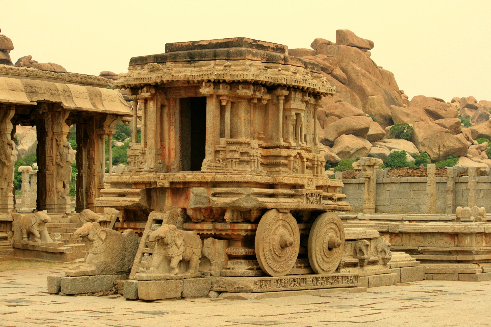

Heritage Map of India

Explore, Learn, and Experience India's Glorious Past
India is a land of immense historical and cultural wealth. With its vast geography and centuries-old traditions, every region has a unique story to tell. The Heritage Map takes you on a virtual journey through India’s most famous historical and cultural sites, offering an immersive and interactive learning experience for children and history enthusiasts alike.
What is the Heritage Map?
The Heritage Map is a digital interactive platform designed to help users explore India’s diverse heritage. It showcases:
Ancient Temples & Monuments – Discover the architectural marvels of India.
Historical Forts & Palaces – Experience the grandeur of royal dynasties.
Sacred Sites & Spiritual Landmarks – Learn about religious traditions and pilgrimages.
UNESCO World Heritage Sites – Explore globally recognized cultural gems.
Regional Folk Stories & Myths – Dive into the legends behind famous places.
Iconic Sites to Explore
Taj Mahal, Agra – A symbol of love and Mughal grandeur.
Konark Sun Temple, Odisha – A masterpiece of ancient craftsmanship.
Ajanta & Ellora Caves, Maharashtra – Rock-cut caves with mesmerizing sculptures.
Hampi, Karnataka – The ruins of the Vijayanagara Empire.
Golden Temple, Amritsar – A spiritual and architectural wonder.
Meenakshi Temple, Tamil Nadu – A vibrant temple with intricate carvings.
Rajasthan’s Forts & Palaces – The majestic homes of Rajput kings.
Why Explore the Heritage Map?
Cultural Awareness – Gain a deeper understanding of India’s diverse traditions.
Educational & Fun – Learn history in an interactive and engaging way.
Visual & Audio Experience – See historical sites in detail and hear their stories.
Inspiration for Travel – Discover places you may want to visit in real life.